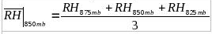

Populate_SkyProcedure
Overview
The Populate_SkyTool (and
Populate_SkyProcedure) populate the GFE Sky_Cover grids based on an algorithm that finds
the maximum model-layer relative humidity (RH), and then applies an exponential relationship
to convert RH to sky cover at each grid point. The Populate_SkyTool contains other functions,
including the ability to turn on/off near surface and high clouds, the option to apply RH
with respect to ice at temperatures below -25C, and “limit value” functionality.
This document explains how the Populate_SkyTool works, and tips for using it.
This section explains the underlying premise of the Populate_SkyTool, and how it uses model RH to
determine sky cover.
- Clouds are determined by first finding the maximum model layer RH (at each grid point)
at the forecast time, corresponding to the availability of model data. The methodology eliminates
the need to manually “pick” a level or layer where the clouds are expected.
- The maximum model layer RH is converted to sky cover through an exponential function, which
can be customized on-the-fly by the forecaster. The exponential relationship has been established
observationally in previous published works (e.g., Walcek, 1994, his Figure 7b), but the exact
shape of this function is not well known and likely depends on stability, shear, temperature,
and other variables. Where model RH is concerned, varying model resolution and different physical
parameterizations impact the distribution of RH. Thus, the exponential function can be customized
by the forecaster to adjust the resultant sky cover.
- Other functionality, including a “limit values” feature, the ability to turn on/off clouds
below 925mb and in the 500-300 mb layer, and the ability to use a modified RH with respect to
ice at temperatures colder than -25C, augment the basic functionality of the tool outlined in
points 1 and 2.
Maximum model layer RH Algorithm
Since GFE OB7.1, both the GFS40 and NAM12 include near-surface layers (30mb deep), with respect to
ground level. The Populate_SkyTool makes use of the mean RH in the lowest 4 of these near-surface AGL
layers. From 925mb to 500mb, the Populate_SkyTool has available RH data in 25mb increments. From 500mb
through 300mb, the vertical resolution available is 50mb. The RH data points are shown schematically
in Figure 1.
When the user opts to exclude clouds below 925mb, the 4 near-surface layers are excluded from consideration.
When the user opts to exclude clouds between 500-300mb, RH from these data points are excluded from
consideration. Otherwise, the Populate_SkyTool uses all available RH information to determine the highest
model-layer RH value in the vertical. Each of the 4 near-surface 30mb layers is considered independently.
If the user selects a layer depth of 50mb, then 50mb centered averages are computed between 925-525mb as
follows:
where the subscript p refers to the adjacent vertical grid points. As an example, if the forecaster selects
a 50mb layer depth, then the mean RH centered about 850mb is given by,

This RH value is considered with all the other layer RH values to determine which layer has the greatest RH.
Since data is used every 25 mb, the successive 50mb RH layers overlap in the vertical. Since data is available
in 50mb increments from 500-300mb, a two-level average is taken as follows:
When 25mb layers are selected by the user, the averaging scheme involves two successive model layers:
Once the layer RH values are computed, the algorithm determines the maximum model-layer RH, and considers
this RH in determining the cloud amount (as shown in the next section).
Figure 1. Vertical grid layers and grid points utilized by the Populate_SkyTool maximum model-layer
RH algorithm.
Application of Exponential Response Function
It is assumed by the Populate_SkyTool that an exponential relationship exists between model layer RH and
cloud amount, and model layer RH is the only variable used by the tool. The exponential function allows the
tool to depict a large range of sky cover values and sharp spatial gradients in sky amount. The forecaster
has control over the shape of the exponential function used in the Populate_SkyTool, as explained below.
The basic exponential function used takes the form of:
where a and b are multiplying factors modifying the shape of the function.
In the specific case of the Populate_SkyTool, a basic exponential function was assumed, with variables to allow
for modification of the function’s shape. While we are confident the function is inherently exponential
in nature, there is not a unique correct shape for this model RH-Sky relationship; it depends on model
parameterizations and other physical factors. So, the goal here is to allow flexibility for adjustments,
if necessary, based on a forecaster’s operational experience with the behavior of the numerical models in
various situations. The function is:
Where dash-RH is the maximum model layer RH value (in percent), RHCLR (in percent) is the user
customized RH threshold for clear skies (resultant Sky Cover 5% or less), and b is a calibration
factor that modulates the slope of the exponential function. The default values are b=1.0 and
RHCLR = 60%. Setting these variables within the Populate_SkyTool is explained further in Section 4.
EXAMPLE 1.
Based on the tool’s default values (b=1.0, RHCLR=60%), when the max model layer RH = 100%, we get:
A maximum model layer RH of 100% yields 100% sky_cover at that grid point in GFE.
EXAMPLE 2.
Again, using the tool’s default values (b=1.0, RHCLR=60%), when the max model layer RH = 60%, we get:
So, for any value of RH equal to or less than RHCLR, our sky cover value is 5% or less (generally taken
as “clear skies”).
We can better see the modulating effects of RHCLR and b (calibration), by graphing the function:
Figure 2. The exponential function employed by the Populate_SkyTool relating maximum model layer RH (%)
to sky cover (%) for the default values (b=1.0, RHCLR = 60%; shown as thick solid line), and values of
b=1.0 and RHCLR = 44% (short dashed gray line), b=1.0 and RHCLR = 74% (short dashed green line), b=1.5
and RHCLR = 44% (long dashed gray line), and b=1.5 and RHCLR = 74% (long dashed green line). In the GUI,
b is referred to as the calibration value and RHCLR is the 5% sky cover threshold.
Increasing the calibration value (b) increases the slope of the curve (long dashed lines in Figure 2) as
compared to the default curve (thick solid line), with 100% sky cover occurring at a value less than 100%
model layer RH (e.g., 81.3% for b=1.5 and RHCLR = 44%). At the same time, the 5% sky cover threshold is
adjusted in this case to 44%. Meanwhile, leaving b constant (at 1.0) and modulating the RHCLR threshold
(from 44% to 74% in Figure 2) primarily modifies the shape of the function at mid-range RH values
(i.e., 50-90%), while maintaining 100% sky cover for 100% maximum model layer RH.
The extreme values of b and RHCLR allowed by the tool are arbitrary, except for the low value of b=1.0
which corresponds to 100% sky cover for 100% RH. The range and default values for b and RHCLR allowed by
the tool were determined subjectively (by trial and error) and generally capture the range of desired sky
values in most situations. If the forecaster desires more clouds at high RH values, the calibration value
should be set higher. On the other hand, if the forecaster desires cloud amount to taper off more slowly
as RH decreases, the value of RHCLR can be set lower. Since the numerical models handle moisture differently,
and initializations are not perfect, there is no one “correct” response function. Again, the goal is simply
to allow the forecaster some flexibility in modifying the exponential response for a given situation or for
model biases common to their forecast area.
Running the Populate_SkyTool in GFE
To run the Populate_SkyTool, make Sky the editable grid element in the GFE temporal editor, and
select MB3->Populate_SkyTool from the Main Menu. When you select the
Populate_SkyTool, you will see a graphical user interface (GUI) appear, as shown below.
The following is an explanation of each option within the Populate_SkyTool GUI:
- Model: Select the model you wish to use, either GFS40 or NAM12. The NAM12 can be used on
grids out 84 hours from the current model run time, and is available in 3-hrly increments. The GFS40
is available in 6-hrly increments out through 180 hours.
- Model Run: Select the model run you wish to use, either the current run, or the previous
(6 hour earlier) run. Note: as new model data is coming into GFE, you may need to select the previous
version for the tool to run.
- Layer Depth: This controls the depth of layer RH used in computing the model’s maximum layer
RH. The choices are 25mb or 50mb layers, as outlined in the previous section, and pertain to model levels
between 925mb and 500mb.
- Use RH with respect to ice at temperatures at or below -25C: This switch toggles on/off a
modified RH with respect to ice, useful in capturing clouds composed primarily of ice crystals (e.g.,
cirrus clouds). These clouds may or may not be opaque in character, and the option to fully represent
these clouds in the Populate_SkyTool is included as an user option.
- Include High Clouds (500-300mb): This toggles on/off model RH between 500-300mb from
consideration in determining the layer with the highest model-layer RH and corresponding cloud
cover.
- Include Clouds Below 925mb: This toggles on/off the four near-surface (30mb AGL) layers
from consideration in determining the layer with the highest model-layer RH and corresponding cloud
cover.
- 5% Sky Cover Threshold at RH percentage: This slider bar sets the threshold for clear
skies (taken as 5% sky cover). If the maximum model-layer RH value is equal to or less than this
percentage, the sky cover will be equal to or less than 5%.
- Calibration: This slider bar controls the slope of the exponential function (parameter
b in equation (5)), and at what RH value saturation occurs. Increasing the calibration value results
in more clouds for a given RH percentage.
- Limit Values: After the algorithm runs, the limit values slider bars can be used to set
bounds on the minimum and maximum sky cover amount returned by the tool at any grid point in the domain.
It works in a manner analogous to the baseline “Limit Values” Smart Tool in GFE.
Once you select your options, choose Run or Run/Dismiss at the bottom of the GUI and the
Smart Tool will populate the sky grid for the selected hour.
Running the Populate_SkyProcedure in GFE
The Populate_SkyProcedure is available from the Populate menu of GFE and allows the Populate_SkyTool
to be run over a user selected time range in GFE, with interpolation performed on hourly grids between
the available model data times. The GUI is largely the same, but two important notes are included near
the top of the GUI. As noted, to run the procedure, press and hold the left mouse button and scroll
across the range of sky grids desired in the Grid Manager. The start and end times selected by the user
must correspond to a 3-hrly or 6-hrly temporal grid block that contains model data in order for the
procedure to run properly. These times are model dependent:
- For the NAM12, the available grid times are 00, 03, 06, 09, 12, 15, 18, 21 UTC, out 84h from the
model run time.
- For the GFS40, the available grid times are 00, 06, 12, 18 UTC, out 180h from the model run time
(through the end of day 7).
Once you select your options and highlight your time range, choose Run or Run/Dismiss at
the bottom of the GUI. The procedure will create scratch grids at the available model times, and then
run the Populate_SkyTool at each of those times to populate the grids with sky cover amount. When this
step is complete, the procedure interpolates between the 3-hrly or 6-hrly grid times to create hourly sky
grids.
Assumptions and Limitations
- It is assumed that an exponential relationship exists between model-layer RH and cloud amount.
This is supported by observational work (e.g., Walcek 1994), but it is also known that temperature,
stability, and vertical shear relate to sky cover, factors not considered by the tool (except for
accounting for RH over ice at temperatures less than -25C). This tool provides an “on-the-fly” manual
adjustment approach to estimate and account for uncertainties in the model-layer RH-cloud relationship.
There is not a unique correct relationship between model-layer RH and sky cover.
- The model-layer RH – sky cover relationship is dependent upon model resolution and physical
parameterizations.
- The tool is dependent on model forecasts. If moisture is not handled adequately in a particular
model solution, the sky output from the tool is not likely to be accurate. The limit values and other
options are provided to subjectively adjust the output as needed.
- The Populate_SkyTool was formulated for relatively low elevations of the eastern CONUS. Pressure
thresholds (such as 925mb) won’t translate well to the high plains or intermountain west, and would
require some modification of the source code in these parts of the CONUS.
Other Tips
- BUFKIT is a useful software tool to understand and anticipate the sky cover values generated by the
Populate_SkyTool based on model forecast soundings. Viewing point model soundings can give the
forecaster a better idea of when they may want to toggle on/off high and low clouds, and whether
population with the NAM12 or GFS40 is more desirable in a given situation.
- In some forecast areas, the NAM12 tends to reach 100% RH more easily than the GFS40, but the NAM12
also tends to show low-level RH values that are too high beneath frontal and subsidence inversions
(often near saturation). In these situations, turning clouds below 925mb off can give a more accurate
result. Also, if high near-surface RH resulting from anticipated ground fog is appearing as cloud cover,
turning off clouds below 925mb will help mitigate this problem.
- To maximize high cloud amount in the Populate_SkyTool, include both 500-300mb clouds and turn on the
RH over ice calculation.
- For thin cloud layers, set the cloud layer depth to 25mb. The tool takes slightly longer to run, but
it will better depict narrow zones of relatively high RH and associated clouds (provided it is captured
accurately in the model).